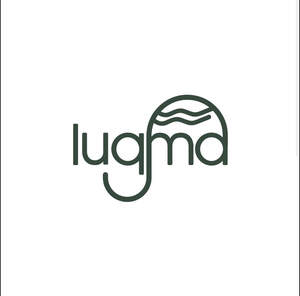

Trade Mark Journal No.2025/030 25 July 2025
UK00004233600 14 July 2025 (30,43)

- Class 30
- Sweets; Candies [sweets]; Sweets [candy]; Chocolate sweets; Sugar-free sweets; Caramels [sweets]; Sugarfree sweets; Sugarless sweets; Peppermint sweets; Sweets (Peppermint -); Sweets (Non-medicated -) being acidulated caramel sweets; Gum sweets; Sweetmeats being candies; Boiled sweets; Non-medicated sweets; Sweets (Non-medicated -); Sweetmeats [candy]; Sweets (Non-medicated -) in the nature of sugar confectionery; Sweetmeats [candy] being flavoured with fruit; Xylitol-sweetened sweets; Foamed sugar sweets; Sweets (Non-medicated -) in the nature of chocolate eclairs; Sweets (Non-medicated -) in the nature of toffees; Peppermint sweets [other than for medicinal use]; Gum sweets (Non-medicated -); Mint-based sweets; Sweets (candy), candy bars and chewing gum; Chocolate candies; Chewing sweets (Non-medicated -); Mint flavoured sweets (Non-medicated -); Chocolate desserts; Sweets (Non-medicated -) in the nature of caramels; Lollipops [confectionery]; Candies; Sweetmeats [candy] containing fruit; Chocolate pastries; Prepared desserts [confectionery]; Chocolate decorations for confectionery items; Sweets (Non-medicated -) being acidulated; Panned sweets (Non-medicated -); Caramels [candies]; Candy decorations for cakes; Sweets (Non-medicated -) in the nature of fudge; Sherbets [confectionery]; Sweets (Non-medicated -) in the nature of nougat; Sugarless candies; Chocolate-coated sugar confectionery; Sweetmeats; Chocolates; Chocolate confectionery; Chocolate candy with fillings; Chocolate confections; Chocolate for confectionery and bread; Sugar candy [for food]; Sugar confectionery; Fruit cake snacks; Chewing sweets (Non-medicated -) having liquid fruit fillings; Flavoured sugar confectionery; Sugar candies (Non-medicated -); Korean traditional sweets and cookies [hankwa]; Cereal-based savoury snacks; Chocolate decorations for cakes; Fruit jellies [confectionery]; Jellies (Fruit -) [confectionery]; Chocolate flavoured confectionery; Sugar-free mint candies; Mint based sweets [non-medicated]; Chocolate confectionary; Non-medicated confectionery candy; Pastries, cakes, tarts and biscuits (cookies); Puddings for use as desserts; Fruit confectionery; Caramels [candy]; Sal ammoniac liquorice sweets (Non-medicated -); Foodstuffs made of sugar for sweetening desserts; Chocolate cakes; Muesli desserts; Boiled sugar sweetmeats; Sweets (Non-medicated -) being honey based; Prepared desserts [pastries]; Sherbet [confectionery]; Liquorice [confectionery]; Chocolate beverages; Candy [sugar]; Chocolate confectionery containing pralines; Chocolate flavoured beverages; Biscuits [sweet or savoury]; Sweets (Non-medicated -) containing herbal flavourings; Sweets (Non-medicated -) being alcohol based; Pastilles [confectionery]; Chocolate confectionery products; Confectionery chocolate products; Candy cake decorations; Chocolate biscuits; Boiled sugar confectionery; Drinks flavoured with chocolate; Gummy candies; Candy cake; Confectionery; Corn-based savoury snacks; Non-medicated chocolate confectionery; Liquorice flavoured confectionery; Savoury biscuits; Chocolate syrups; Starch-based candies; Rice cake snacks; Confectionery items coated with chocolate; Ice-cream cakes; Truffles [confectionery]; Pies [sweet or savoury]; Pastries with fruit; Fruit pastries; Non-medicated sugar confectionery; Sugar confectionery (Non-medicated -); Chocolate-based fillings for cakes and pies; Fondants [confectionery]; Milk chocolates; Peppermint for confectionery; Sherbets [confectionery ices]; Mints [candies, non-medicated]; Fruit jelly candy; Cereal snack foods flavoured with cheese; Biscuits flavoured with fruit; Savory pastries; Candy coated confections; Candy; Candy mints; Chocolate confectionery having a praline flavour; Chocolate syrups for the preparation of chocolate based beverages; Chocolate beverages with milk; Gelatin-based chewy candies; Pastries containing creams and fruit.
- Class 43
- Restaurant services; Hotel restaurant services; Take-out restaurant services; Carvery restaurant services; Fast-food restaurant services; Sushi restaurant services; Restaurant reservation services; Self-service restaurant services; Bar and restaurant services; Restaurant and bar services; Take-away restaurant services; Ramen restaurant services; Mobile restaurant services; Tempura restaurant services; Washoku restaurant services; Japanese restaurant services; Providing restaurant services; Spanish restaurant services; Restaurant services for the provision of fast food; Bistro services; Restaurant information services; Cafe services; Salad bars [restaurant services]; Hotel catering services; Rental of food service apparatus; Food service apparatus (Rental of -); Rental of food service equipment; Restaurant services incorporating licensed bar facilities; Brasserie services; Agency services for reservation of restaurants; Hotel services; Restaurant services provided by hotels; Udon and soba restaurant services; Café services; Hotel reservation services; Catering services for company cafeterias; Takeaway food services; Providing hotel and motel services; Take-away food services; Reservation and booking services for restaurants and meals; Self-service cafeteria services; Cafeteria services; Hotel services for preferred customers; Resort hotel services; Pet hotel services; Providing room reservation and hotel reservation services; Motel services; Hotel accommodation reservation services; Catering services for the provision of food; Take-away fast food services; Business catering services; Catering services for the provision of food and drink; Hospitality services [food and drink]; Night club services [provision of food]; Hotel accommodation services; Contract food services; Providing food and drink catering services for exhibition facilities; Serving food and drink for guests in restaurants; Takeaway food and drink services; Take-away food and drink services; Providing food and drink catering services for convention facilities; Bar services; Office catering services for the provision of coffee; Catering services for providing Japanese cuisine; Club services for the provision of food and drink; Mobile catering services; Consultancy services in the field of food and drink catering; Wine bar services; Room reservation services; Catering services for providing European-style cuisine; Catering services for providing Spanish cuisine; Sommelier services; Hotel room booking services; Coffee bar services; Restaurants (Self-service -); Self-service restaurants; Private members dining club services; Takeaway services; Booking of restaurant seats; Beer bar services; Snack-bar services; Providing food and drink catering services for fair and exhibition facilities; Catering services; Hotel reservation services provided via the Internet; Catering services for hospitality suites; Coffee shop services; Outside catering services; Reservation of restaurants; Cocktail lounge services; Lounge services (Cocktail -); Providing information about restaurant services; Canteen services; Providing food and drink for guests in restaurants; Airport lounge services; Personal chef services.
Sarwan saber sewdin